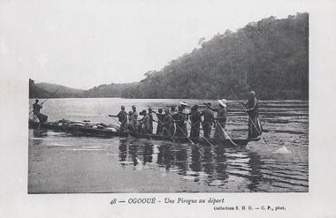

Home / Crossroads and Golden Ages / Africa: Sahel, West and Central
Encyclopedia ID 1423
Ogooué river pirogue journey

Paddle and pole a dugout pirogue upstream, reading rapids and currents and loading cargo at river landings.
Heritage note
Part of the living heritage of Gabon.
Origins
Usually placed in the era of Crossroads and Golden Ages (about 500 to 1500), although its exact origins are uncertain, within the cultural world of Africa: Sahel, West and Central.